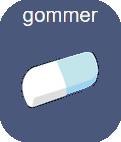
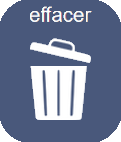

CAArtable est une application de CAA (Communication Alternative et Améliorée) libre de droit, conçue pour un usage scolaire. Elle est développée pour l’Equipe Ressource ASH de la Haute-Vienne par François Defaye, Enseignant Référent aux Usages du Numérique, avec l’aide précieuse de Céline Duquerroy, Enseignante Ressource Troubles du Spectre Autistique et de Karine Ruatta, orthophoniste.
Cette application a vocation à accompagner la scolarisation des élèves non-verbaux ou en difficulté de communication. Elle se veut prête à l’emploi en milieu scolaire, avec quelques ajustements simples possibles via le menu de configuration.
Le but recherché n’est pas de faire des phrases complexes ou grammaticalement correctes, mais de permettre à l’enfant de communiquer avec ses pairs et avec les adultes.
Elle repose sur une sélection de pictogrammes libres de droits, majoritairement issus du projet ARASAAC (sous Licence Creative Commons BY-NC-SA). Les pictogrammes complémentaires ont été créés par l’auteur et sont réutilisables librement.
Deux versions de l’application sont actuellement disponibles :
Les deux versions sont basées sur le même code et ont normalement un fonctionnement identique.
L’application permet à l’utilisateur d’afficher trois pages distinctes :
L’écran principal comporte deux zones :
Pour choisir un pictogramme, il suffit de cliquer dessus : il est alors lu oralement et ajouté à la barre d’affichage des pictos choisis.
Pour permettre l’accès à un maximum de pictogrammes sur un écran réduit et lisible, seuls les premiers pictos de chaque catégorie sont affichés.
Pour en voir davantage, il faut cliquer sur le bouton de la catégorie.
Cela déclenche l’ouverture d’une petite fenêtre latérale qui affiche l’ensemble des pictos de la catégorie :
Cette fenêtre disparait dès qu’un picto est sélectionné (ou au clic dans l’arrière-plan sombre de la fenêtre, ou sur le bouton retour).
Une fois les pictos choisis, un clic sur le bouton démarre la lecture.
Le bouton devient alors : un clic dessus met fin à la lecture.
Le bouton  efface uniquement le dernier picto choisi.
Le bouton  efface toute la sélection.
La barre de recherche peut être affichée en haut à droite de l'écran. Elle est désactivée par défaut pour simplifier l'affichage mais peut être réactivée dans la page de configuration.
Pour rechercher un mot, il suffit de le taper au clavier puis de cliquer sur : si le mot existe dans la base de données de l'application, il sera lu et ajouté à la zone d'affichage.
Le menu est accessible en double-cliquant sur  .
.
Ainsi, il est difficile d’y accéder accidentellement en manipulant l’application.
Cette page permet de modifier l’écran principal :
L’application repose sur du code HTML, CSS et JavaScript, et fait appel à une base de données au format JSON, intégrée dans les fichiers.
Cette base de données se présente sous la forme suivante :
La base de données peut être modifiée pour répondre à des besoins précis (notamment réorganiser l’ordre d’affichage des pictos). Dans ce cas, il est important de respecter la structure de la base, sans quoi l’application ne pourra plus fonctionner.
Pour chaque entrée, un fichier image et deux fichiers sons sont associés. Il est possible d’y accéder facilement dans l’arborescence des dossiers de l’application.